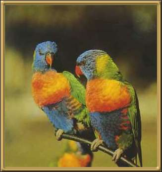

The rainbow lorikeet is naturally found along the entire eastern seaboard of Australia, and there is now a thriving community of them in Perth, W.A., as well. Flocks of these birds fly over our house heading for the ripe fruit trees in Summer. They fly like rockets, with a great deal of screeching! Approx. 30cm (11 inches).
Photographer: Unknown